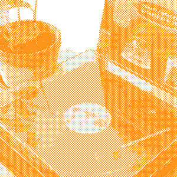
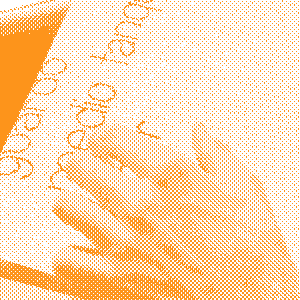
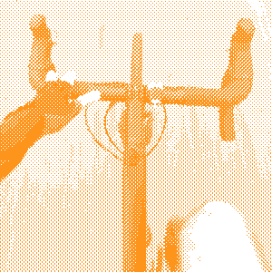

Alo, I'm Facu!
Planted: Jun 23, 1995. Last tended:
As someone who has explored various areas of the Design industry, including Digital, Email, Graphic, Editorial, and currently Product, I believe that the most accurate way to name my profession is simply "Designer." To me, Design is a mindset that allows for easy adaptation into any specialization, with the methods to learn and adapt seamlessly into new design contexts.
I owe this comprehensive and broad perspective to the different design jobs and education experiences I have had. This mindset leads me to think outside the box and be on the lookout for topics, ideas, or learning experiences that may not match my current profession at first glance. But with the Design mindset, I can connect these seemingly unrelated topics to my daily work.
Currently, my focus is on Product Design, which was a detour from my mostly Graphic Design past. I decided to stick to this area because it indulges the more structured and methodical side of my personality. Unlike Graphic Design, Product Design takes on the entire project from beginning to end, allowing me to bring both my creative and research-oriented selves to the table.
24 Mar 2026
Currently I'm:
Redoing this whole site!

Experience
| Sep 2024 to the present | Product Designer at Appetize.io. Currently working as in-house designer doing eveything design-related: in-app feature experiences, keeping the web app polished, website and brand, marketing materials and collaterals. |
| Apr 2024 to Aug 2024 | Product Designer at Rootstrap. Worked on some startup projects creating both website and in product interfaces. |
| Feb 2021 to Apr 2024 | Lead product Designer at Capicua. Worked at Capicua as Lead designer, doing both hands-on design as well as overseeing projects to ensure design standards and quality. UX/UI design for all kinds of products and project sizes, from simple landing pages, to complex apps and assistance for ongoing work. |
| Dec 2018 to Feb 2021 | Graphic Designer at Estudio Cuareim. Mainly, we worked on editorial design for Nuvó direct sales catalog, and packaging for all sorts of products, for brands such as Ta-Ta Supermarkets and such. |
| May 2016 - Feb 2018 | Digital Designer at Takeoff Media. In this opportunity, I worked in the e-mail marketing team for DIRECTV Latam, designing and adapting visual content communications and web templates for email campaigns. |
Education
| 2024 | Leading for Creativity at IDEO. Explored some ideas related to creativity, team working and product. |
| 2022 | UX/UI Design at Coderhouse. Solidified the knowledge about Interface Design which I had previously explored hands-on through my work at Capicua. |
| 2017 to 2021 | Visual Design Communication at Designer at FADU, UdelaR, Uruguay. Completed 3 years outof 4 of curricular courses, covering both practical and theoretical aspects of visual communication. This formation is where I got the most understanding of research, communication and theory, complimenting my previous mostly technical education. |
| 2016 | Web Design at BIOS Institute. Did HTML, CSS and website-oriented design. years later I would be thankful for this simple yet powerful knowledge as it would grant me easier understanding of tools like Webflow. |
| 2014 to 2015 | Graphic Design at UTU, Uruguay. This was the first thing I studied, and thankful it was so. Using this very technical education as a foundation I got quickly into what Design really was, setting my flexible mindset from the early start. |


